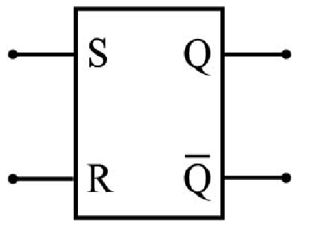

Home
Artigos
Contato
Sobre Nós:
A FlipQuest é um site onde você irá encontrar uma serie de matérias focadas em Flip Flop e seus derivados onde você irá conhecer as funções e como funciona a tecnologia de Flip Flop.
Matérias de Etudos:

Flip Flop:
Bloco primário utilizado na construção de unidades de armazenamento de dados em dispositivos eletrônicos, sendo o componente principal da memória mais rápida encontrada em aparelhos computacionais.
Simplificação Booleana:
Usando a álgebra booleana é possível simplificar expressões. Como cada circuito corresponde a uma expressão, simplificações de expressões significam em simplificações de circuitos.
Portas Lógicas:
Circuitos lógicos são dispositivos que operam e trabalham com um ou mais sinais lógicos de entrada para produzir uma e somente uma saída, dependente da função implementada no circuito.
Tipos de Flip Flop:
Existe vários tipos de Flip Flop como JK, T e D, que graças existe um leque de variedades de usabilidade do Flip Flop, tendo dentro desses tipos a tecnologia de reset, clear, entre outros.